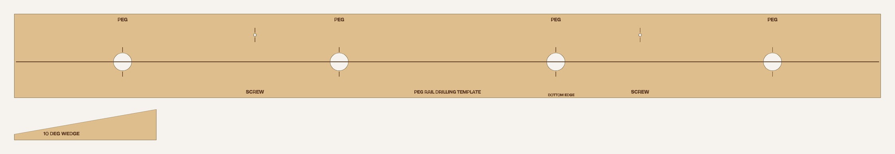

2 wood screws, #10 × 2-1/2 in (5 × 65 mm), into studs; or anchors that suit your wall
2 wood plugs, 3/8 in (10 mm), to hide the screw heads
Wood glue for the pegs (this rail lives outside the hot room)
Tools
Saw, square, tape measure, sandpaper
Drill, 3/4 in (19 mm) Forstner or spade bit, 3/8 in (10 mm) bit for the counterbores, 1/8 in pilot bit
Drill press or the 10° wedge from the template; a scrap board under the rail against tear-out
Made by DIVELUX, makers of handmade wool sauna hats · diveluxsaunahat.com · more free tools: diveluxsaunahat.com/pages/sauna-toolsCC BY 4.0 · Build at your own risk.
Cut the rail to 36 in (914 mm). Round over or sand the front edges and both ends.
Mark the peg holes with the template, or measure: 4-1/2 in (114 mm) from each end, then every 9 in (229 mm), 1-1/2 in (38 mm) up from the bottom edge.
Drill the 3/4 in holes right through, tilted 10° so the pegs point up. On a drill press, lay the rail face up on the 10° wedge with its top edge on the high side; by hand, use the wedge as a sighting guide. Clamp a scrap board behind to stop tear-out.
Cut 4 pegs 4 in (102 mm) long and chamfer the front end. Glue them in, flush with the back face. Wipe off the glue.
Drill the screw holes at 10 in (254 mm) and 26 in (660 mm) from the left end (16 in (406 mm) apart, the usual stud spacing), counterbored 3/8 in wide and 3/8 in deep.
Sand, then oil it or leave it raw. Find the studs, level the rail, screw it on and glue the plugs into the counterbores.
Drilling template
svg/ and dxf/: the full-length template (914 × 89 mm) for a CNC or a large laser, and the left half (457 × 89 mm) for a hobby laser. The layout is symmetric end to end: for the right half, turn the template over (face down), keep the edge marked BOTTOM EDGE on the bottom edge of the rail and line it up with the right end.
Red = cut: outline, the 19 mm peg holes, 3 mm pilot marks for the screws, and a 10° wedge. Blue = score: the peg centerline. Black = engrave: labels and centering ticks.
Cut it from 3 mm hardboard or plywood, lay it on the rail flush with the ends and edges, and mark through the holes with an awl.

Wood
Use a wood that is sold for sauna interiors where you live, such as aspen, alder or western red cedar. Choose clear boards without loose knots or resin pockets. For this rail any straight, dry board works; it hangs in the changing room, not in the hot room.
For hats
Hang a felt sauna hat by its loop. A hat pulled over a thin peg can take a dent; nine inches between pegs leaves room for hats side by side.
Safety
Build at your own risk. These are hobby plans, not engineered drawings, and nobody has checked them for your bench, your wall or your sauna.
Check that nothing can burn or pinch: no metal on a surface skin can touch, no sharp edges, no gaps that can trap a finger.
Fix the rail into studs or into anchors rated for the load. Glue and plaster alone will not hold it.
Made by DIVELUX, makers of handmade wool sauna hats · diveluxsaunahat.com · more free tools: diveluxsaunahat.com/pages/sauna-toolsCC BY 4.0 · Build at your own risk.